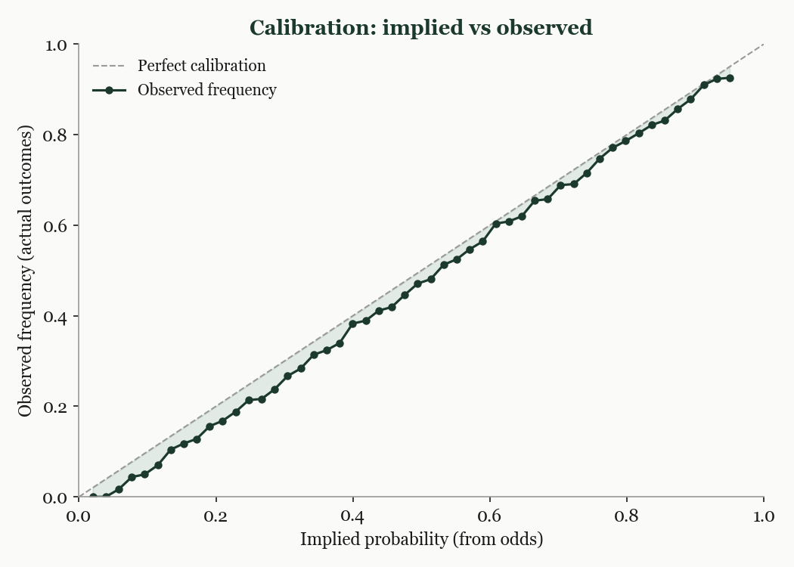
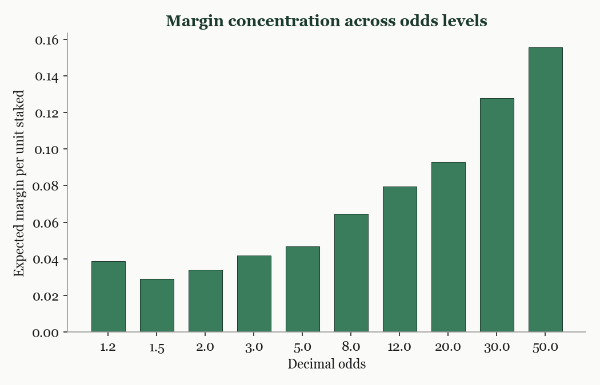

Most people think gambling companies make money by predicting outcomes. That intuition is wrong. The business is not about knowing who will win. It is about assigning the right price to uncertainty, consistently, across millions of events.
When a bookmaker quotes decimal odds of 2.0 on a football team, they are making a specific claim: this outcome has a 50% chance of happening. The formula is simple. Take one and divide it by the odds. Odds of 4.0 imply a 25% chance. Odds of 1.5 imply a 67% chance. These numbers are not predictions in the colloquial sense. They are prices, and like all prices, they embed an assumption about value.
This reframing matters because it connects betting to every other industry that prices uncertain outcomes. An insurance premium implies a probability that a claim will be filed. A credit spread implies a probability of default. A warranty price implies a probability of product failure. In each case, the price is a probability claim, whether the business thinks of it that way or not.
Consider a coin toss. A fair price for either side would be 2.0, implying 50% each. A bookmaker might price heads at 1.91 and tails at 1.91. Both sides now imply roughly 52.4%, and the two implied probabilities sum to about 105%. That extra five percentage points is the overround, the bookmaker's structural margin built into every event.
On any single coin toss, the bookmaker can lose. That is expected and normal. The margin only materialises in aggregate, across thousands of events. A difference of two or three percentage points sounds trivial. Across enough volume, it is decisive. This is the entire model: small edge, enormous scale, relentless consistency.
If the model depends on consistency, then the obvious question is: how do you check whether the prices are actually right? The answer is calibration. Take every event the bookmaker has ever priced at a 50% implied probability and check how often those events actually occurred. If the answer is 50%, the prices are accurate at that level. If the answer is 43%, the prices are systematically wrong, and money is leaking in a predictable direction.
A calibration curve plots implied probability on the horizontal axis against observed frequency on the vertical axis. Perfect calibration would trace a 45-degree diagonal. Every point that sits below the diagonal represents a price band where outcomes happen less often than the odds imply, meaning the bookmaker is overcharging slightly. Every point above the diagonal is the opposite: a price band where outcomes happen more often than implied, meaning the bookmaker is undercharging and losing money.

When you plot enough data, a persistent pattern emerges. At short odds, where the strong favourites sit, the calibration curve tracks close to the diagonal. Prices are roughly fair. At long odds, where the unlikely outcomes sit, the curve bends noticeably below the diagonal. These events occur measurably less often than their prices imply. Longshots are systematically overpriced.
This pattern, known as the favourite-longshot bias, has been documented across horse racing, football, tennis, and other sports markets for decades. Two factors contribute. The first is behavioural: people overvalue the excitement of a longshot ticket. A fifty-to-one payout on a single match feels more compelling than it should, and bettors are willing to pay a premium for that possibility. The second is structural: bookmakers have less precise information about unlikely outcomes and shade their prices conservatively, which in practice means overcharging. The bias is where a disproportionate share of the bookmaker's actual margin lives.

The calibration curve is not specific to gambling. Insurance companies can plot their predicted claim probability against observed claim rates. Credit analysts can plot their predicted default probability against actual defaults. Warranty providers can do the same with product failure rates. In every case, the question is identical: when we say something is 30% likely, does it actually happen 30% of the time?
If the curve bends, there is a systematic error. Finding and correcting that bend is the core analytical task. At scale, small systematic mispricings compound into large losses. And small corrections compound into large competitive advantages. Calibration is not about prediction accuracy in any single case. It is about honesty, consistency, and control at scale.
This is part one of a three-part series on working analytically in the gambling industry. Next: Automated Triage — how to direct human attention to the highest-impact market movements using a compress-rank-summarize pipeline.